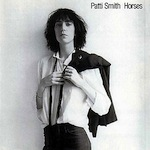

Top 100 Debut Albums (Part Five: 20 to 1)
Welcome to the fifth and final part of our Top 100 Debut Albums feature. This is very much the business end of the list – the top twenty. When you’ve finished digesting it, why not drop us a comment in the Disqus box below? This is our biggest ever feature and it would be great to generate some lively discussion – what did we overlook, what doesn’t deserve to be here, and what would your number one have been? Let us know.
To tie in with the Top 20, we have also recorded a Top 100 Debuts special edition of The No RipCast. You can check it out here. There are a few more debut-themed articles scheduled for next week, too, so keep your eyes peeled for those.
If you found your way here via a search engine or external link, please take the time to explore the rest of the Top 100 using the links below. There are individual Spotify playlists for each part, which are linked in each article. To listen to a giant Spotify playlist featuring tracks from 94 of the featured albums (six aren’t available at the time of writing) please click here.
[Part One: 100 to 81] [Part Two: 80 to 61] [Part Three: 60 to 41] [Part Four: 40 to 21] [Part Five: 20 to 1]
20. R.E.M.
Murmur
(I.R.S., 1983)
Imagine an alternate universe in which a landmark release like Murmur hadn’t existed to fill the gap from all that was wrong in 1983 – we’d admire glam rockers prancing around the stage in acid washed jeans, new wavers whose sole inspiration is that of an Aqua Net can, or finely trimmed balladeers rakin’ the big bucks for forcing their staged heartache on our precious sensory cells. But as much as Poison credits itself for inventing alternative rock, R.E.M. are the ones who truly came up with the ethos of what the genre would become, replacing caricaturesque rock posturing in favor of a more sincere form of music that gave a voice to millions of college kids seeking to listen to a more grounded sound. By resuscitating tried-and-true concepts derived from a cumulus of styles, mainly American roots and sixties folk-rock, R.E.M. assembled a progression of jingle jangle for a younger generation. Featuring a 12-string Rickenbacker virtuoso and a star vocalist in the making, Murmur jumped a step ahead of the time’s Southern pop conventions by giving it a face, focusing on subtle studio noodling to give added dimensions to the song’s fairly accessible compositions. They came into it thinking it wasn’t good enough, not realizing they had created a new standard that present-day imitators continue to aspire to: being pleased for doing it good enough and leaving any histrionic gestures behind. (Juan Edgardo Rodriguez)
19. THE XX
xx
(Young Turks, 2009)
Bucking the industry’s trend toward extravagance, the xx released their minimalistic debut album, xx. Subdued and haunting, it oozes style, atmosphere, and in some unexpected places, heart. Though largely electronic, xx is rarely busy, relying on simple hooks, solid percussion and the ethereal vocals of Romy Croft and Oliver Sim. This wonderful restraint provides much of its emotion and tension and the album oddly addictive. Its cohesiveness in vision is impressive, especially for a debut; the xx knew exactly what they wanted in xx and did it. It didn't take long for xx to receive its deserved recognition and it took home the UK's Mercury Prize the following year, among many other commendations. (Andrew Davison)
18. BON IVER
For Emma, Forever Ago
(Jagjaguwar, 2008)
He went into the woods, and this is what came out of it. Nine intimate tracks, a voice crooning in a damaged way, a guitar patiently strummed. It was early 2008. America was in a completely different climate than it was in the 90s. A new generation, fueled by the Internet, was changing exponentially. It was For Emma, Forever Ago that could calm down the increased anxiety of living. It showed that love still persists, like cigarette smoke on a jacket, in the back of one’s head. Nostalgia reunited with music again. Vernon gave us the record that knew how to do that. (Michael Iovino)
17. THE STROKES
Is This It
(RCA, 2001)
Many people in their mid-twenties (such as myself) will – and have – endlessly discoursed on how important this record is. It’s true, its impact stretched way beyond the contents and confines of the record itself. It’s the reason I bought my first pair of Converse trainers, it’s the reason my mum bought me Marquee Moon for Christmas one year and it’s the reason all my friends suddenly started raiding through their Dad’s closet’s, looking for old ties and suit jackets to wear. However, for all its sonic and cultural impact that it had when it landed meteor-like in the CD player of many a young person. It was – more than anything – just a fun record. It was everything you are told a rock ‘n’ roll record should be; it was fast, loose, cool and catchy. Its spirit was inescapable, the intoxicating essence of those songs gripped you and no matter where you where, when Is This It came on, the floor became a dance floor. Is This It Encapsulates everything you want from a debut album. (Daniel Dylan Wray)
16. THE STOOGES
The Stooges
(Elektra, 1969)
The most striking thing about The Stooges’ debut album is how ahead of its time it is, how nothing else from the period sounds like it. It was released in 1969, a year full of great number one albums that couldn’t have sounded more dissimilar to The Stooges’ raucous proto-punk. It’s the record that introduced a crazed, drug addled frontman with the best abs in rock and roll. Iggy Pop couldn’t sing but put all the energy he had into every note. Listening to it in all its weird depravity, hearing how remarkably well it’s aged is an experience no one should miss. (Andrew Baer)
15. PATTI SMITH
Horses
(Arista, 1975)
“Jesus died for somebody’s sins, but not mine” goes that famous opening line. Never has beat poetry felt quite as vital as on Horses; Smith’s spoken word is delivered with such a captivating energy that every syllable is thrilling. The adrenaline is palpable – you even hear Smith beating against her chest during Break It Up, and in these flourishes of passion she explodes any preconceptions you may have had about Beat Poetry being pretentious. The arrangements perfectly shadow Smith’s journeys from meditation to catharsis and back again. Horses is not only an influence for generations of under-represented female musicians, but it was an essential step in the emergence of punk rock, a landmark statement for alternative music. (Stephen Wragg)
14. THE DOORS
The Doors
(Elektra, 1967)
After their fiery start as Whisky-a-Go-Go’s house band, The Doors experienced global success with the release of their eponymous debut. There is no weak section to The Doors and the record remains the band’s best. Jim Morrison’s profound, intelligent and generally weird lyrics are beautifully complemented by the organ-driven instrumentation. From radio-favorite Light My Fire through to anthemic Break on Through (to the Other Side), The Doors is a nonstop rollercoaster of psychedelia – pure mainlined pugilism from beginning to The End. (Lukas Clark-Memler)
13. THE SMITHS
The Smiths
(Rough Trade, 1984)
There’s been enough plaudits to the talents of Morrissey and Marr to take up this entire feature. In brief, in 1984 they brought us this: ten songs lyrically dealing with being young, depressed and broke on the rainy streets of Manchester. Tales of tiny rented rooms in Whalley Range, murder and unrequited love filled the mind of young Stephen. Not that it would have meant diddly if he hadn't met a shit-hot guitarist with enough in his locker to match the lyrical skills. Compared to their later work, the production gives it a slightly flat feel, which often works with the more downbeat songs. But it was still enough to get a lot of people excited back then and in the decades since – people who needed a band to soundtrack their own troubled youth. For that, I and many others salute the talents of Morrissey, Marr, Rourke and Joyce. (D.C. Harrison)
12. WEEZER
Weezer
(DGC, 1994)
Sometimes simple really is best. Ten songs; guitar, bass, drums and vocals; verse, chorus, verse; job done. It may sound unremarkable, but what makes Weezer truly great is the sublime melodies that frontman Rivers Cuomo plucks from the ether and transforms into the base for this collection of tracks. Taking its cue from the classic age of bubblegum pop, Weezer is one of those rare records which is brilliant on the surface, and better still when you delve deeper into it. Buddy Holly fizzes with the joy of blossoming romance, In The Garage is impossibly carefree, and The World Has Turned And Left Me Here tugs at the heartstrings more with every play. Nine albums in and Weezer still haven’t managed to rediscover the alchemy that made this record so special but in 1994, the geeks truly did inherit the earth. (Joe Rivers)
11. NICK DRAKE
Five Leaves Left
(Island, 1969)
The hauntingly elusive Nick Drake, quintessential folk songwriter, hit his stride early: this is a work of staggering beauty. Defined as much by the strings and guitars as it is by Nick Drake’s near-stoic vocal work, Five Leaves Left is more than just a prelude to Pink Moon: It’s a work that's easy to become hyperbolic about, and while the man’s career – and life – may have ended many years too early, his music made an indelible impact on a broad scale. While that impact may have been slow to grow beyond a cult figure, his music represents something undeniably transcendental. While Nick Drake may have cut a figure that’s hard to pin down, Five Leaves Left gives us something to hold to. More than just a debut to a good career, this was an album with an inescapable emotional spark to it. (Matt Montgomery)
10. JIMI HENDRIX EXPERIENCE
Are You Experienced
(Track, 1967)
Are You Experienced unfolds with a certain effortless perfection that seemed only possible in the late 1960s, when rock music was locked into a steady groove of sex and drugs. With complete apathy to how many times a variation of this has been said before, Are You Experienced redefined the role of the electric guitar in music in a way no other album has before or since. When the shock and awe of absolute cosmic curveballs like Are You Experienced? and Third Stone From the Sun starts to wear off, it only helps to reveal how Hendrix was a master at playing it straight, too, with the subterranean blues of Red House and the stinging jabs of Hey Joe. (Andy Pareti)
Playlist: Are You Experienced?
9. TELEVISION
Marquee Moon
(Elektra, 1977)
Pioneering the NYC CBGB punk scene in the mid 70s, Television released a debut album of such immense listenability and musicianship it was rightly canonized upon its release, most notably by rock writer Nick Kent in the NME in 1977. Delivering power and perfection in eight lean, tightly wound mini-masterpieces, enveloped in the crisp guitar interplay of leader Tom Verlaine and Richard Lloyd, the essential Marquee Moon still amazes and has rightly earned the status of one of the greatest guitar rock albums, if not one of the, greatest albums of all time. (Pierce Brown)
8. RAMONES
Ramones
(Sire, 1976)
This milestone album recharged rock ‘n roll, creating divisions between those who loved the group and those who despised them with equal fervor. It certainly proved that DJs had long ago lost touch with what was happening in the streets. The short bursts of compressed energy that defined the Ramones sound would inspire thousands of bands, but Johnny’s thrashing guitar would be nothing without the songwriting talents behind its fourteen tracks. Dee Dee’s tough-as-nails street hustler attitude blended perfectly with Joey’s warped sense of humor, and lesser talents couldn’t replicate their sardonic view. The album’s influence is still felt today. Right now, at some corner of this sad world, some kid is listening to these songs and thinking of forming a group. It goes on. (Angel Aguilar)
7. LED ZEPPELIN
Led Zeppelin
(Atlantic, 1969)
Led Zeppelin’s debut was quite possibly the first album I heard that made me conscious of blues music, or of blues-music-as-hard-rock. Zeppelin took the opportunity to craft what could be taken as a live album, subtle with its flaws and loud and spontaneous in its delivery. Such purity. Songs like Good Times Bad Times and Communication Breakdown exhibited Jimmy Page as a guitarist able to both wow with technique and complexity but also as one to know when to dial it back and keep to the essential riff. Dazed and Confused was a revelation when first it reached my ears, boasting a drummer with enough personality to win more attention from than Page or Robert Plant. John Bonham was one-of-a-kind and it spoke volumes that his talents behind the kit were so essential to Zeppelin’s identity. How Many More Times is still one of my favorite closing tracks on any LP. (Sean Caldwell)
Playlist: Not available on Spotify
6. THE PIXIES
Surfer Rosa/Come On Pilgrim
(4AD, 1987-1988)
It’s odd to think just how generous record companies were in the early years of the CD, when they were determined to offer as many tracks as possible to fill up the format’s extra space. Admittedly most of what was on offer was fairly tedious, but occasionally it produced something wonderful – like this collection of the first two Pixies records. Taken on their own both are outstanding and probably equally worthy of a place on this list; put together though the combination is something else entirely. Running the gamut from the elegant despair of Caribou to the filth of Cactus, or the childish whimsy of Tony’s Theme, and the bawdiness of I’ve Been Tired, via some rather dodgy studio banter, it’s twenty-one tracks of perfection, and sums up the irresistible appeal of the band (just about the only quintessential Pixies ingredient that seems to be missing is Frank Black's UFO obsession). Although I probably don't need to tell you that. (Mark Davison)
5. THE CLASH
The Clash
(CBS, 1977)
Believe it or not I wrote the first line for this blurb, then went over to allmusic.com for some research and found I had inadvertently duplicated the first line of their band summary, “Where the Sex Pistols were nihilistic...”, verbatim. Great minds, I suppose. But let’s face it, the Clash were the “build baby build” to the Pistols “burn baby burn”. There’s plenty of boredom and rage on display, but it never seems purposeless. It’s music you could get behind and rally to, confronting injustice wherever you find it. Lester Bangs was spot on to call it righteous. (Alan Shulman)
4. PAVEMENT
Slanted And Enchanted
(Matador, 1992)
Pavement were so lazy that they didn’t bother borrowing a bass guitar to record this album (in drummer Gary Young’s garage), instead running a guitar through a bass amp and settling for the resulting fuzzy lo-fi sound that just so happened to suit their music perfectly. It’s by virtue of their exemplary laziness that Pavement came to be the indie legends they are, proving that catchy rock songs sound best when they’re performed with the laid-back summery joy with which you listen to them. But they pack emotional punches too – in spite of Stephen Malkmus’ lyrical obtuseness, Zurich Is Stained and Here conjure a gorgeously hazy melancholy amidst the unfalteringly satisfying slacker anthems. I will not ever get bored of Slanted and Enchanted: Pavement achieved perfection in imperfection. (Stephen Wragg)
Playlist: Trigger Cut/Wounded-Kite At :17
3. JOY DIVISION
Unknown Pleasures
(Factory, 1979)
What to say that hasn’t been said hundreds of times before? This is an album that soundtracks both the troubled mind of Ian Curtis and also Manchester, not only in 1979, but even now in 2011. It’s still there in the underpasses and bridges. Unknown Pleasures is the perfect soundtrack for driving round this or perhaps any other city late at night, when the streets are empty; this is an album of paranoia and anxiety, the state before the resignation that was to come. Hook, Sumner and Morris were always the perfect band to provide the music to the lyrical imagery – taking their punk origins and moving beyond, guided by Hannett, who covered it all with a production that left it timeless. Unknown Pleasures exists in a vacuum, separate from anything before or after. (D.C. Harrison)
2. ARCADE FIRE
Funeral
(Merge, 2004)
Here’s a bit of trivia: which album from the 2000s was featured on more end-of-decade “Best Of” lists than AF’s debut? Trick question – there wasn’t one. Despite its macabre title and subject matter, Funeral is vibrant, fresh, alive, and presented by a hitherto unknown outfit with a precocious knack for musicality. Each spin is a punch in the gut that forces recognition and appreciation of the resulting gasp for air. Funeral is, to be cliché, dying to live. Just the first few bars of opener Neighborhood #1 (Tunnels) are enough to tickle the spine with that distinctive sensation that something amazing is about to unfold. The succinct 10-track set includes drumming, wailing, melody, harmony, meter, desperation, mourning, release, beauty, and celebration, all without the slightest sense of melodrama or insincerity. Play it at your funeral, play it at your wedding, play it everywhere every day in between. Funeral is killer. (Ben Jones)
Playlist: Not available on Spotify
1. THE VELVET UNDERGROUND
The Velvet Underground & Nico
(Verve, 1967)
We’ve read it in countless columns, album lyrics, and pop culture references: the Beatles or the Stones? But if I were to identify the two opposite poles in a legendary rock n’ roll skirmish, than I’d bet my money between the Velvets and the Beatles. Two worlds apart, but equally influential, the Velvet Underground are usually taken for granted due to their lack of sales figures. But while the Beatles started off spreading a universal message, Velvet Underground & Nico consecrated the depravity of rock n’ roll. It was also ingeniously multifaceted, breeding new life to copious venerable subgenres: the viciousness of punk rock; the slithering sexuality of glam; the lawless defiance of ambient noise and droning guitar feedback; the esoteric experiments of neo-folk. It remains a singular, if mystifying, piece of pop history, chiefly due to its odd band of misfits – Lou Reed’s stiltedly poetic musings and John Cale’s tenacious renewal of clean rock sounds would mesh with Nico’s hoarse moans, portraying eleven vivid documents of an authentic, subversive lifestyle ready to shock the lovey-dovey Monterey audience of ’67. It opened a new era of impassioned adventurism and opinion, thus spawning the creation of the modern rock critic. (Juan Edgardo Rodriguez)
. . .
[Part One: 100 to 81] [Part Two: 80 to 61] [Part Three: 60 to 41] [Part Four: 40 to 21] [Part Five: 20 to 1]
2 December, 2011 - 06:49 — No Ripcord Staff